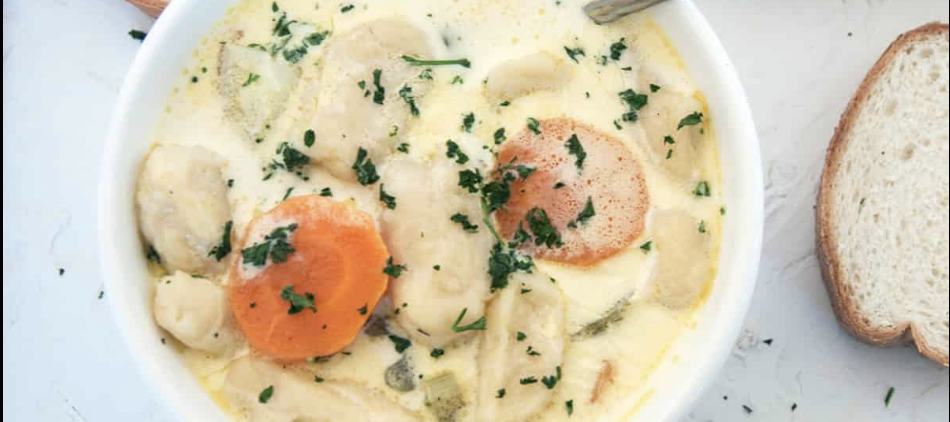

Knoephla Soup

Description
Growing up in North Dakota, I subsisted off of knoephla soup.
It is a thicker creamy soup based on chicken stock and cream.
Ingredients
- 5 raw potatoes, diced
- 1 medium onion, finely chopped
- 1 stalk celery, finely chopped
- 1 gallon water
- 2 tablespoons chicken base
- 2 cups flour
- 2 teaspoons baking powder
- 1 teaspoon salt
- 2 eggs
- 1/2 cup water
- 1 can cream of chicken soup
- 1 cup cream
- 3 tablespoons butter
Steps
- In large soup pot, combine potatoes, onion, celery, water, and chicken base.
Cook until potatoes are soft.
- For the dough: combine flour, baking powder, salt, and eggs with
1/2 cup of water
- Roll dough into log shapes approximately 1/2 inch in diameter.
- Cut 1/2 inch pieces of the log into the hot soup mixture
- Add cream of chicken soup, cream, and butter
- Simmer. Soup is finished when the knoephlas are soft (12-15 mins)
Home Page